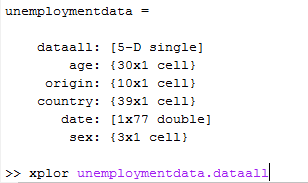
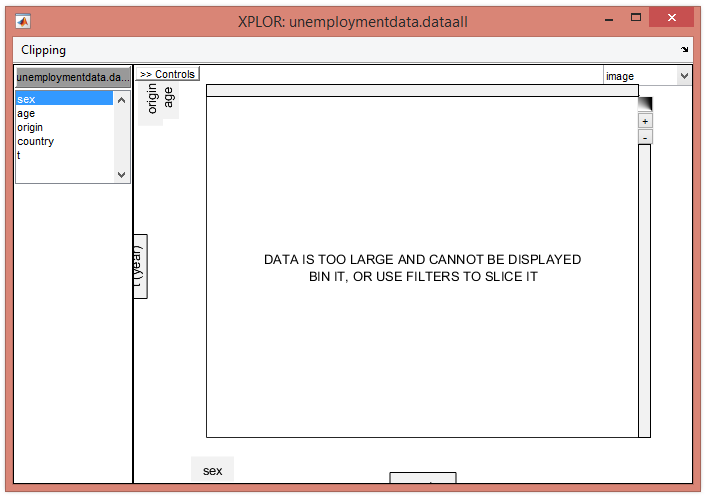
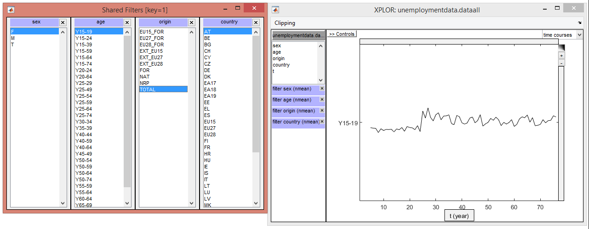
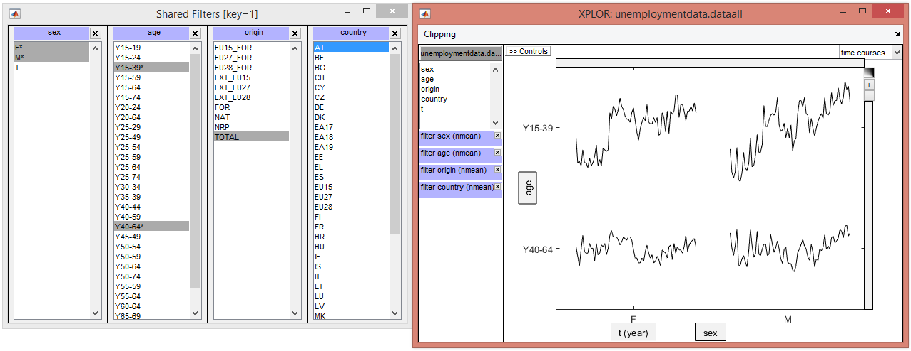
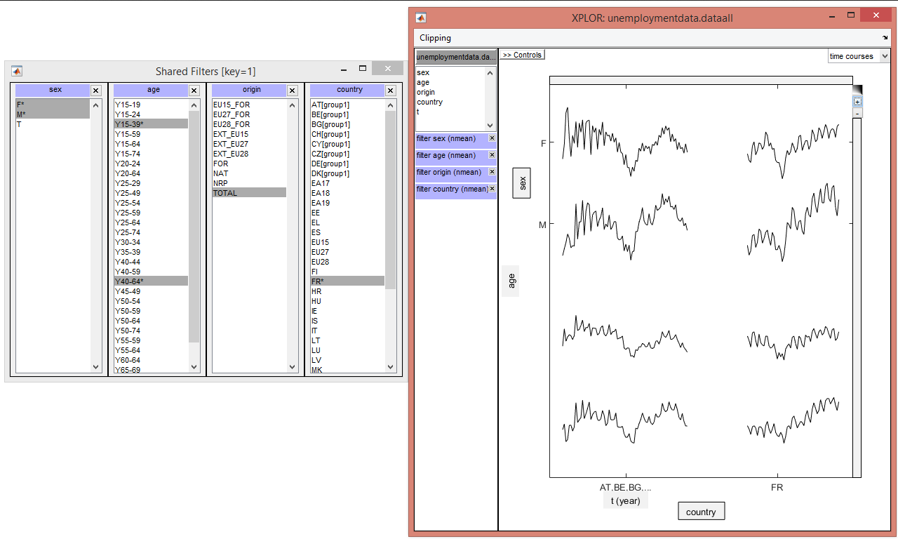

Tutorial¶
This tutorial shows the basic features of xplor based on the Matlab version. A more complete tutorial will be available once the first version for python is released.
Screenshot of the command line to start xplor
Screenshot of the set headers window

Screenshot of the initial display
Screenshot of the creation of filters
Screenshot of a comparative display
Screenshot of an average
